Esta página es un pequeño regalo, hecho con todo mi amor, para contar nuestra historia... la historia más bonita que se ha escrito: la nuestra ❤️.
Cómo comenzó todo... ❤️
Nos conocimos en el 2022, en una piscinada entre amigos. Desde el primer momento que nuestras miradas se cruzaron y comenzamos a hablar, sentimos una conexión muy especial, como si el universo ya lo tuviera escrito para nosotros ❤️.
2022 — Nos conocimos ❤️
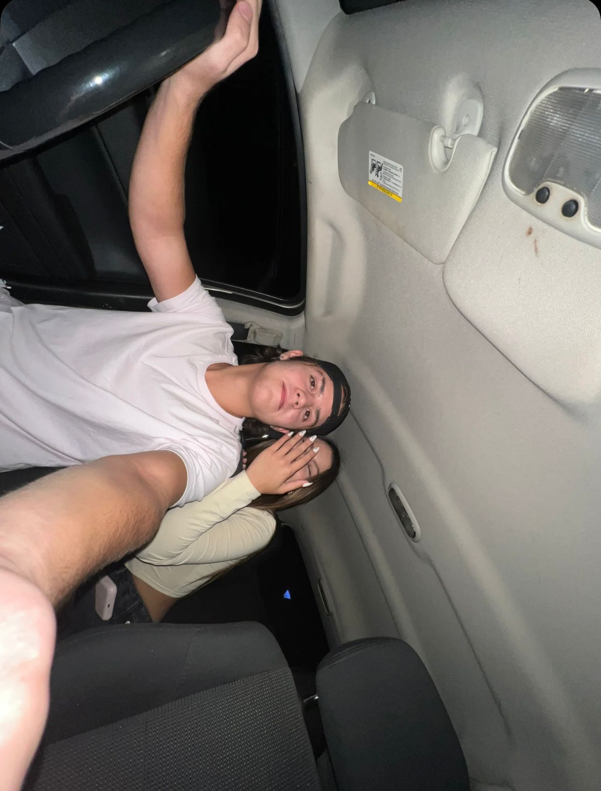
En una piscinada entre amigos, sin que lo supieras, un gochito iba a llegar a tu vida para cambiarla para siempre… 😎 ❤️ Desde entonces, comenzó lo más bonito que me ha pasado: tú y yo, nuestra historia ❤️.
Nuestro primer beso ❤️
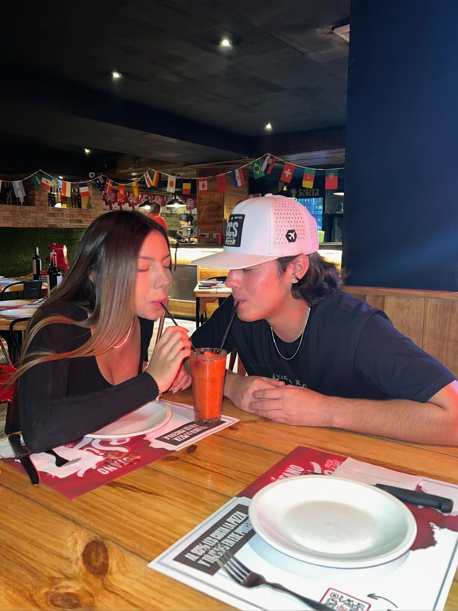
Habíamos salido con amigos y, al final de la noche, nos devolvimos a tu casa. Íbamos en mi carro, yo manejando… y mi mano descansaba sobre tu piernita, sintiendo esa cercanía tan especial que ya había nacido entre nosotros ❤️.
Cuando llegamos a tu casa, teníamos rato hablándonos, mirándonos, con esas ganas que ya no podíamos disimular… ganas de que ese momento pasara. Y sin pensarlo dos veces, tomé el atrevimiento de acercarme y darte ese primer beso, ese que marcó el comienzo de todo, ese que se convirtió en el primero de los muchos que quiero darte en esta vida y en todas las que vengan ❤️.
Ese día descubrí cuáles serían mis labios favoritos… los tuyos, los que siempre voy a querer besar ❤️.
Nuestra primera cita ❤️
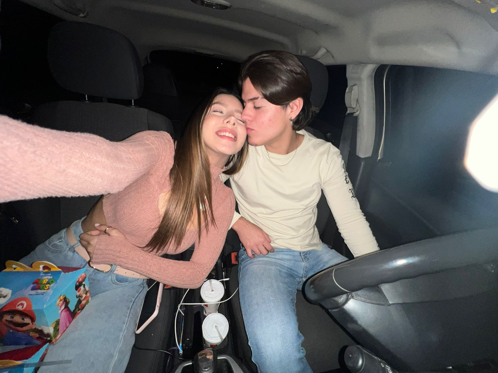
Fui a buscarte a tu casa, nervioso pero emocionado… Esa noche estaba destinada a quedarse grabada en nuestras almas ❤️.
Fuimos a McDonald's, pero como ya era tarde, las mesas estaban cerradas. No nos importó. Nos sentamos en mi carro, cada quien con su combo, riéndonos, conversando, mirándonos como si el mundo allá afuera dejara de existir ❤️.
Las palabras fluían, pero fueron nuestras miradas las que hablaron más fuerte esa noche. Esa conexión que sentí contigo no la había sentido jamás… Era como si nos reencontráramos después de habernos esperado toda la vida ❤️.
Ari, hasta grabaste toda nuestra cita en cámara rápida, regalándome uno de los recuerdos más tiernos que guardo con amor infinito ❤️. Y para coronarlo, ese día también conocí a tu abuelita… una señal más de que, desde el inicio, la vida ya nos quería unir.
Noche de mirador ❤️
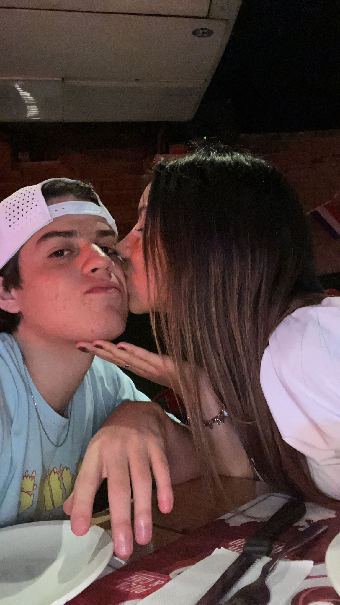
Esa noche subimos juntos al mirador en mi carro, buscando un momento solo para nosotros, lejos de todo, donde solo existiéramos tú y yo ❤️.
Y fue allí, bajo el cielo lleno de estrellas, donde nos abrimos como nunca antes. Hablamos de nuestras heridas, de nuestros sueños, de todo lo que llevábamos dentro... sin miedos, sin máscaras, siendo simplemente nosotros ❤️.
Ese día no solo escuché tu voz, escuché tu alma. Vi a la niña fuerte, valiente y llena de amor que merecía ser protegida, cuidada y amada con cada latido de mi corazón ❤️.
Esa noche, en el silencio del mirador, supe que quería quedarme contigo… y entendí que amar significa también prometer ser refugio, consuelo y fuerza para quien más lo merece: tú ❤️.
Nuestra primera vez ❤️
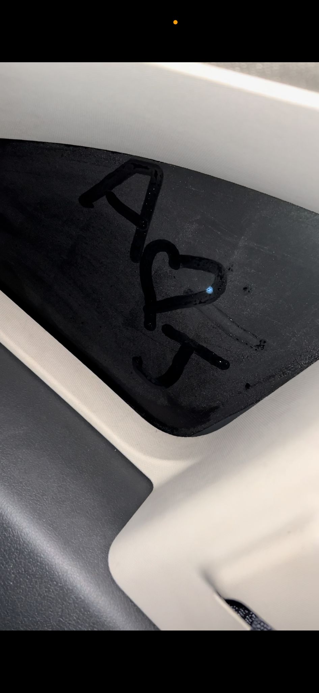
Ese día no planeábamos que pasara… simplemente nos dejábamos llevar por la conexión tan inmensa que ya había nacido entre nosotros ❤️.
Fue en mi carro, sencillo para el mundo, pero perfecto para nosotros. Porque no fue el lugar lo que importó, fue el amor, la confianza, las miradas, los silencios que decían más que mil palabras ❤️.
Ese día no solo te entregué mi cuerpo… te entregué mi alma, mis miedos, mis sueños, mis latidos. Y supe, con cada caricia, con cada beso, que era contigo, que siempre sería contigo ❤️.
Espero seguir entregándome a ti, una y otra vez, en cada abrazo, en cada mirada, en cada vida que nos toque compartir ❤️.
Nuestro amor no tiene fronteras ❤️
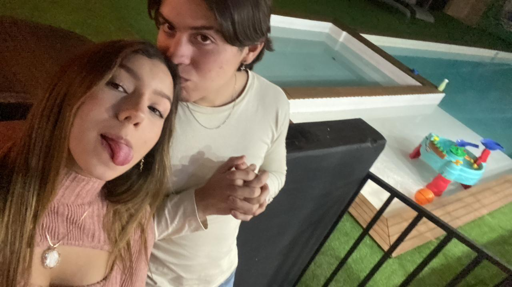
Llegó ese día en el que nuestros caminos, físicamente, tuvieron que separarse… yo partía hacia Estados Unidos y tú te quedabas en Venezuela ❤️.
Fue un adiós difícil, lleno de abrazos, lágrimas y promesas. En medio de todo, te hice una promesa: “Voy a volver a abrazarte, pase lo que pase”❤️.
Desde ese momento, cada kilómetro que nos separaba solo fortaleció lo nuestro. Nuestro amor no entiende de mapas, ni de relojes… porque te sentía aquí, en cada latido, en cada pensamiento, en cada sueño ❤️.
Y finalmente, cumplí mi promesa: te volví a abrazar. Y en ese abrazo entendí que nada, absolutamente nada en este mundo, podrá separarnos jamás ❤️.
Te amo, Ari. Nuestro amor no tiene fronteras. Nuestra historia es infinita, escrita con lágrimas, sueños, abrazos y un amor que es más grande que cualquier distancia ❤️.
Noches largas, días difíciles ❤️
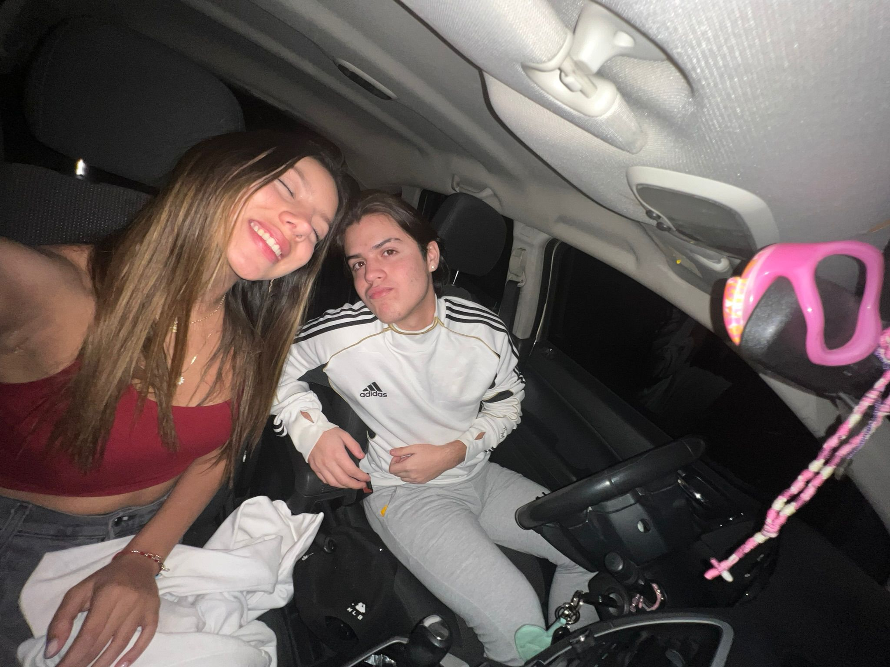
Hubo días en los que el mundo parecía apagarse... noches eternas donde el silencio pesaba, donde el corazón dolía de tanto extrañar ❤️.
No podía tenerte a mi lado, y aun así… estabas en todo. En mis pensamientos, en mis sueños, en mi pecho. Como si vivieras dentro de mí, como si mi alma supiera que la tuya nunca se había ido ❤️.
Lloré muchas veces. Te juro que lo hice. Pero cada lágrima me recordaba que te amo. Que te elijo. Que aunque el camino se llenara de distancia y circunstancias duras… algo dentro de mí sabía que nosotros éramos destino, no casualidad ❤️.
Y aunque la vida quiso alejarnos mil veces, nuestras almas se aferraron más fuerte. Porque al final, siempre supimos lo que éramos: almas gemelas que no nacieron para rendirse, sino para encontrarse una y otra vez ❤️.
Esa llamada ❤️
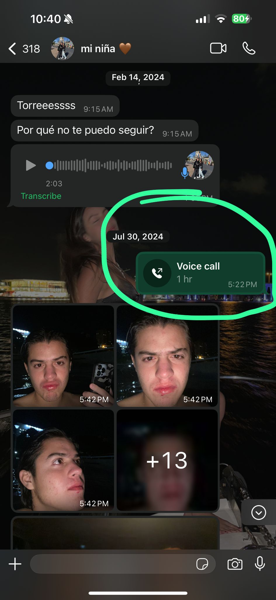
Faltaban pocos días para mi cumpleaños… y había algo que no me dejaba tranquilo: necesitaba verte❤️.
Una noche, sin pensarlo más, tomé el teléfono y marqué. Era esa llamada que lo cambiaría todo. Te propuse que vinieras a visitarme. No me importaba cómo ni cuánto… solo sabía que quería abrazarte. Que haría lo que fuera necesario para tenerte cerca ❤️.
Hablé con tu familia, con tu tía Nacarid… le expliqué que necesitaba que confiaran en mí. Y lo hicieron. Porque sabían lo que tú significas para mí ❤️.
Días después, con lágrimas en los ojos, te mandé la foto de los pasajes. No había vuelta atrás. Ibas a venir. ¡Y solo de imaginar ese momento ya sentía que el corazón me explotaba de amor, emoción y gratitud! ❤️
Esa llamada no fue solo una invitación… fue un grito del alma. Fue el “ven” más sincero que he dicho en mi vida. Porque cuando el amor es real, uno cruza lo que sea por tenerlo cerca ❤️.
El reencuentro ❤️
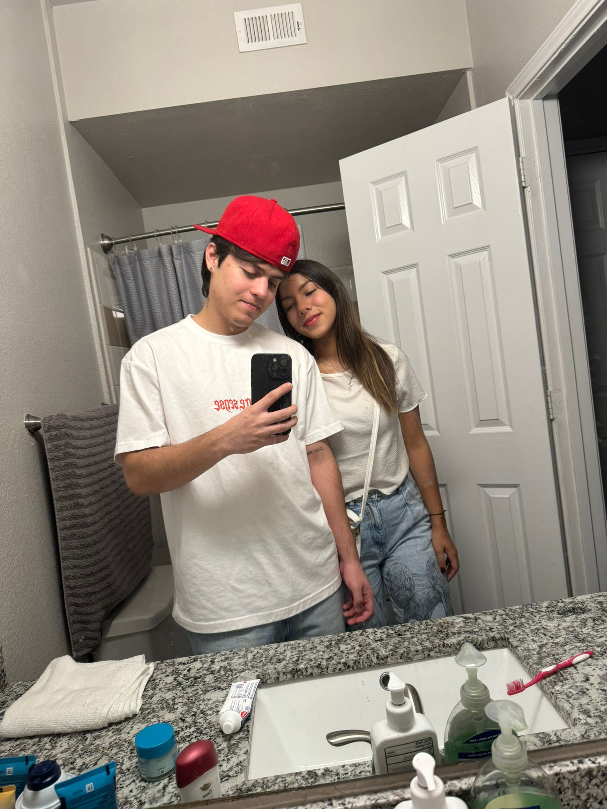
Después de tantos días, noches, lágrimas y llamadas… por fin había llegado el día.
Ari venía de un viaje larguísimo por Colombia, y su vuelo aterrizaba en Dallas.
Yo fui dos horas antes al aeropuerto. Esa noche casi no dormí, parecía un niño contando los segundos para ver a su regalo más preciado ❤️.
Cuando el avión aterrizó y supe que estaba pasando los controles, mi corazón no sabía si correr o estallar. Me temblaban las manos. No sabía dónde meter tanta emoción.
Y entonces… ella salió por una puerta diferente, y me tocó buscarla por todo el aeropuerto mientras hablábamos por llamada.
Y ahí fue. La vi.
De espaldas.
Y aunque ya era mía, sentí esas mismas mariposas del primer día.
Esa sensación de saber que estás frente a la persona que el universo diseñó solo para ti ❤️.
Nos abrazamos. Nos miramos de arriba abajo.
Y aunque ya la conocía, se veía más hermosa que nunca.
Le tomé la mano, como quien no quiere soltar nunca más…
Y nos fuimos juntos en mi carro, escuchando a Duki, como en esos días de Caracas donde todo era un sueño ❤️.
“Cuando el amor es verdadero, el tiempo no es pérdida, es preparación.”
“Cuando por fin te abraza quien amas, entiendes que ningún sacrificio fue en vano.”
“Y cuando por fin la tienes cerca… no dudas ni un segundo de que valió la pena TODO.”❤️
Conociendo a tu suegro ❤️
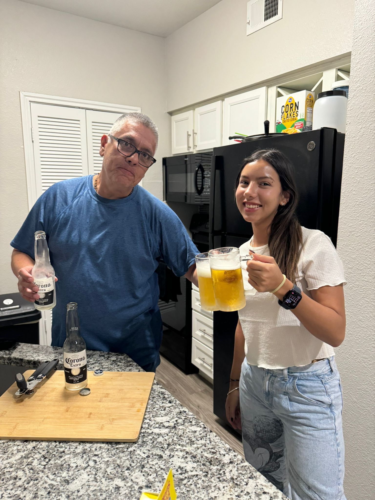
Ese día Ari conoció a mi papá… y los nervios se sentían en el aire. Ella estaba ansiosa, preguntándose cómo sería él, si la aceptaría, si se llevarían bien ❤️.
Pero todo cambió en el instante en que se vieron por primera vez. Fue aquí en casa… y desde ese momento, mi papá la trató como si fuese su hija. Sin preguntas, sin juicios, solo con cariño genuino y una sonrisa sincera ❤️.
Lo que vino después fue aún más bonito: se ganaron el corazón mutuamente. Risas, confianza, incluso se tomaban sus cervezas juntos... como si siempre se hubieran conocido ❤️.
Para mí, fue un momento que nunca olvidaré. Verla feliz quedándose en casa, compartiendo con mi papá, y yo ahí con ella… era como ver mi sueño cumplido. Sentía que la vida me estaba regalando un pedazo de futuro, de ese que tanto soñamos: una familia unida ❤️.
Y aunque aún no conoce a mi mami ni a mi hermano… sé que ese día llegará. Y cuando eso pase, sabrán lo mismo que mi papá ya sabe: que Ari es una en un millón, y que llegó para quedarse en nuestras vidas ❤️.
Nuestro primer viaje juntos ❤️
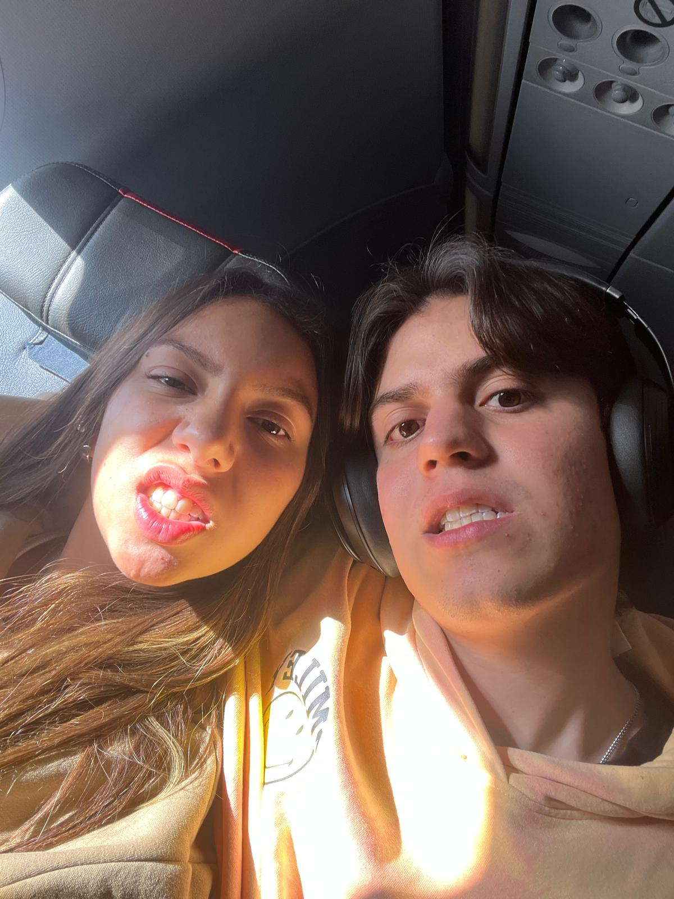
Fue nuestro primer viaje como pareja… y lo vivimos al máximo. Fuimos a Miami, llenos de emoción, de planes, de ganas de compartir el mundo juntos ❤️.
La pasamos increíble… aunque perdimos como tres vuelos de regreso 😂 Pero, ¿sabes qué? Eso lo hizo aún más especial. Porque ese día que no estaba planeado, ese que debía ser el regreso, terminó siendo uno de los mejores días que vivimos allá ❤️.
Fuimos a la playa, caminamos de la mano por la orilla, con el mar como testigo de lo que somos tú y yo. También visitamos museos, paseamos por la ciudad, reímos como niños y nos miramos como si fuéramos los únicos en el planeta.
Ese viaje fue un antes y un después. Porque no solo compartimos un destino, compartimos momentos que se quedarán para siempre en el corazón. Y confirmé algo que ya sabía: no importa a dónde vayamos… si voy contigo, todo se siente como el paraíso❤️.
La noche en la que nos unió el destino ❤️
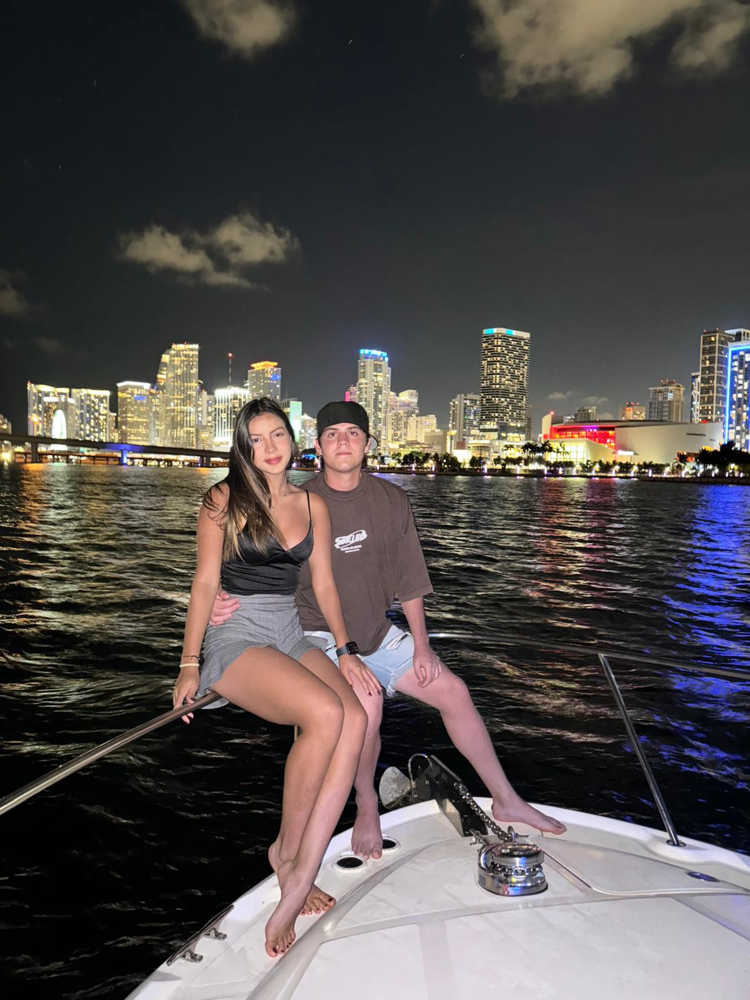
Fuimos a un puerto, donde nos esperaba un yate para pasar dos horas navegando juntos, con música, atardecer, y esa magia que solo se siente cuando estás con la persona correcta ❤️.
Ari pensaba que íbamos a dar un paseo tranquilo… pero lo que no sabía era que esa noche le pediría ser mi novia. El momento fue perfecto: el cielo pintado de naranja, el mar reflejando nuestras miradas, y mi corazón latiendo como loco ❤️.
Le pedí que fuera mía. Que camináramos juntos esta vida. Y dijo que sí. En ese instante supe que esa noche quedaría grabada como una de las más felices de mi vida.
Después del yate, fuimos a cenar a un restaurante argentino, pedimos unas cervezas, seguimos riendo, cantando, amándonos con esa alegría que solo tienen dos almas que ya se reconocen.
Y para cerrar con broche de oro… bueno, digamos que cerramos la noche como dos personas que se desean con el alma y con el cuerpo también 😏💫
Esa noche no solo comenzó una relación… esa noche comenzó una historia que vamos a contar para siempre❤️.
Cafuné: una canción, un beso, una noche eterna ❤️
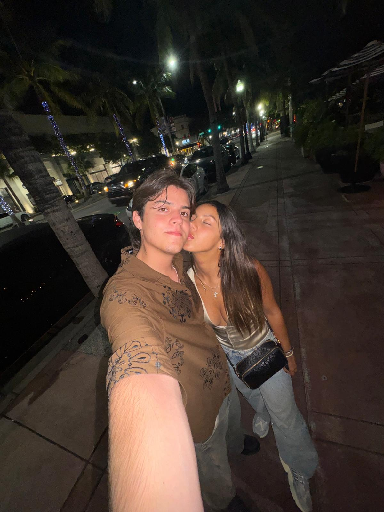
Fue en Miami, durante ese mismo viaje inolvidable. Esa noche fuimos al concierto de Micro TDH… y aunque ya sabíamos que iba a ser especial, nunca imaginamos cuánto ❤️.
Entre luces, música y emociones, nos tomamos unos cócteles que nos dejaron loquitos jajaja 🍹. Y en medio de toda esa energía, vino ese momento que nunca voy a olvidar: Ari me dedicó "Cafuné". Me la cantó llorando, mirándome a los ojos, como si cada verso nos perteneciera… como si esa canción hablara de nosotros, del amor a distancia que luchamos todos los días ❤️.
Cuando terminó de cantarla, nos besamos. Y ese beso… fue de esos que no se olvidan jamás. Sentí que el universo entero nos aplaudía por haber llegado hasta ahí.
Y para completar esa noche perfecta, cuando llegamos al hotel —todavía prendidos y riéndonos— grabamos uno de mis videos favoritos: nosotros entrando por el lobby, yo hablando argentino, Ari tentada de la risa… y las llaves del cuarto perdidas quién sabe dónde 😆.
Fue una noche completa: amor, música, carcajadas, y esa complicidad que solo se tiene cuando el corazón está en casa… y mi casa, Ari, siempre ha sido donde estés tú ❤️.
Volver a despedirnos ❤️
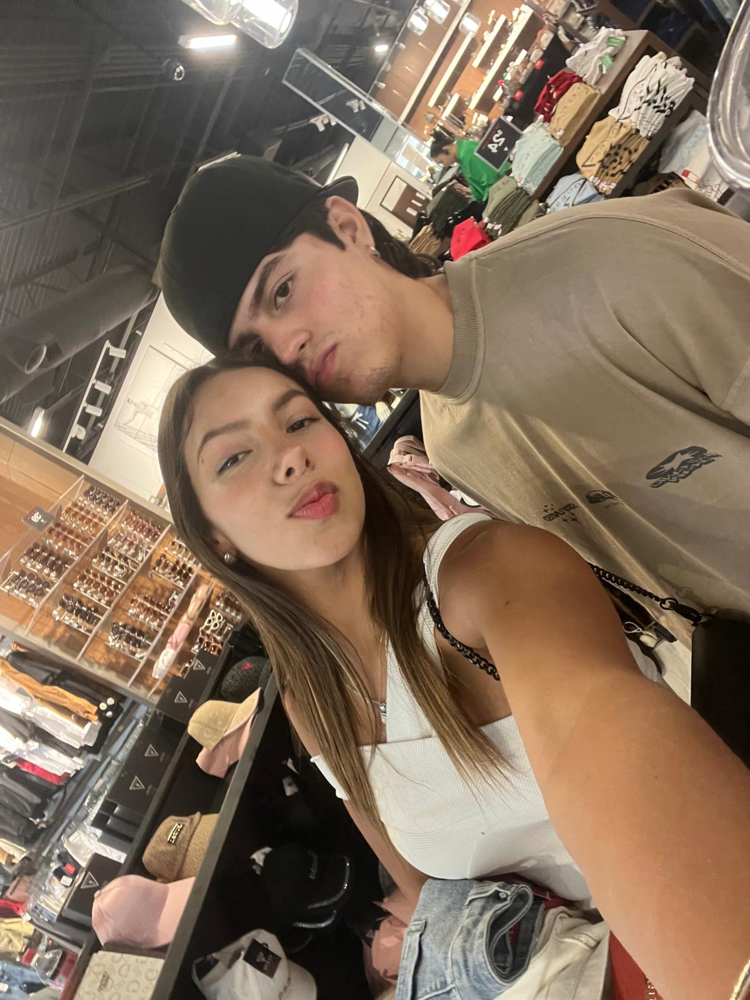
Ese día Ari volvía a Caracas, y aunque sabíamos que llegaría, nada te prepara para un momento así ❤️.
Desde la casa, mientras hacías la maleta, yo ya estaba llorando. Ver cada prenda, cada cosa tuya guardándose de nuevo, era como ir empacando pedazos de mi corazón también.
Y cuando llegamos al aeropuerto… sentía que me hundía. Te abrazaba, te besaba, pero por dentro solo quería que el tiempo se detuviera. Y lo más duro fue cuando empezaste a avanzar en la fila. Cada paso tuyo era como una estaca más en el pecho… como si cada centímetro de distancia me doliera físicamente.
Pero no dije nada. Me aguanté, porque en el fondo estaba seguro: nos volveríamos a ver. Esta despedida no era el final, era solo una pausa. Lo nuestro no termina con un vuelo, sigue latiendo a pesar del mapa.
No me arrepiento de nada. Que hayas venido fue la mejor cosa que me pasó en el año. Vivir contigo, compartir días, abrazarte al despertar, reír, caminar, existir juntos… fue un regalo. Y aunque dolió verte irte, volvería a elegirte mil veces más❤️.
Las primeras rosas ❤️
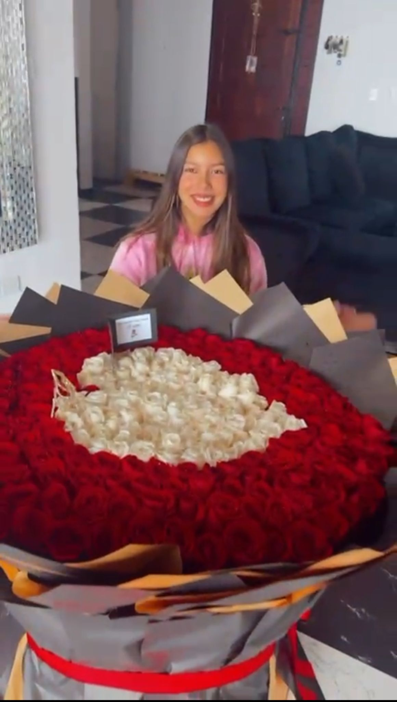
Ese día decidí sorprenderla con algo que hablara por mí… algo que gritara sin palabras cuánto la amaba: un ramo gigante de rosas ❤️.
Lo organicé todo con mucho cuidado, en silencio, como quien prepara una misión especial. Y gracias a una cómplice muy especial que grabó el momento, pude ver su reacción: una sonrisa inmensa, una alegría que iluminó el cuarto, y esa mirada que me hizo sentir que lo había logrado… que había tocado su alma desde la distancia.
Verla tan feliz con ese ramo, sabiendo que era yo quien causaba esa felicidad, fue una sensación que no se puede explicar. Fue como regalarle flores al amor de tu vida… y ver florecer su sonrisa frente a ti.
Ese fue el primero de muchos. Porque si de algo estoy seguro, es que ella merece rosas toda la vida❤️.
Orlando: el viaje que nos acercó otra vez ❤️
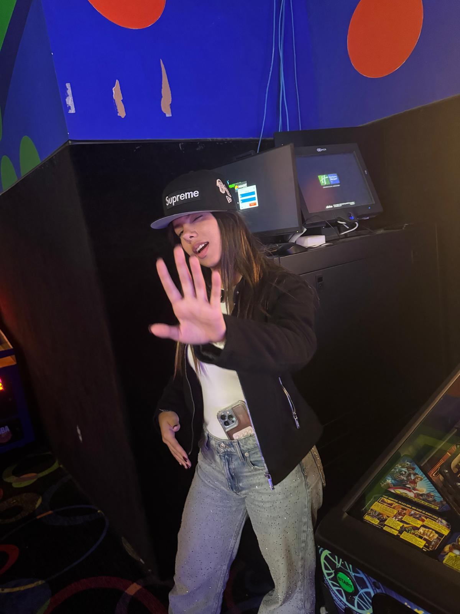
Después de estar varios meses a distancia, un día recibí un mensaje que me devolvió la ilusión: su tía Nacarid me contó que vendría a Orlando ❤️.
Yo no dudé ni un segundo. Empezamos a organizar todo para reencontrarnos allá. Y cada vez que compraba una entrada para los parques, revisaba vuelos o hacía planes, sentía que estaba más cerca de ella… del amor de mi vida.
Fue hermoso vivir esa ilusión. Era como si todo volviera a moverse otra vez, pero esta vez hacia nosotros. No era solo un viaje, era el resultado de toda la espera, todo el amor a distancia, todo lo que habíamos construido con paciencia y fe.
Y sí, valió totalmente la pena. El viaje fue increíble, lleno de momentos inolvidables. Estar juntos en Orlando, después de tanto tiempo separados, fue otra prueba más de que cuando el amor es verdadero, siempre encuentra el camino ❤️.
Conocer a su familia ❤️
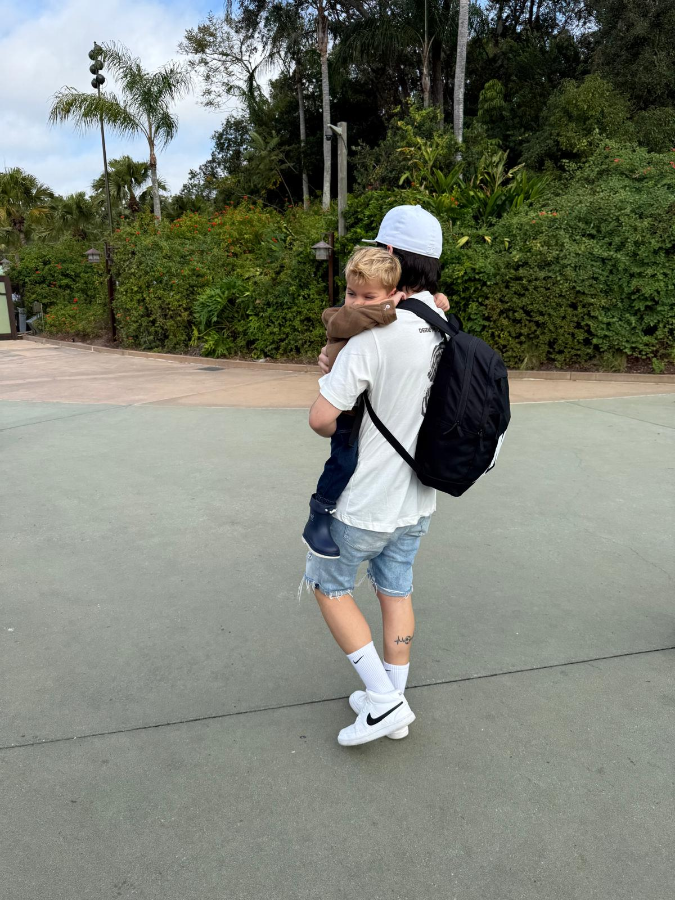
Después de tanto tiempo deseando conocerlos, por fin se dio: conocí a la familia de Ari, y no pudo ser en mejor momento… durante nuestro viaje a Orlando ❤️.
Fue en el hotel donde nos encontramos por primera vez. Estaba nervioso, claro… porque cuando uno ama tanto a alguien, también desea que su familia lo reciba con cariño. Y así fue. Desde ese primer encuentro sentí una vibra linda, cálida, real.
Pasamos días increíbles en los parques, compartiendo momentos que se me quedaron en el corazón. Aunque no fueron muchos, bastaron para darme cuenta del tipo de personas que son: nobles, divertidas, respetuosas, y con un corazón gigante.
Las tías de Ari me hicieron sentir cómodo desde el principio. Verlas criando a esos dos bebés hermosos, con tanto amor y entrega, me tocó profundamente. Son una familia especial… y compartir con ellos me hizo entender aún más el mundo de Ari, ese mundo que algún día quiero llamar familia también.
Espero de corazón que esta sea solo la primera de muchas experiencias juntos. Porque no solo amo a Ari… también valoro profundamente a quienes la rodean y la han formado ❤️.
Disney fue bonito, pero tú eras la magia ❤️
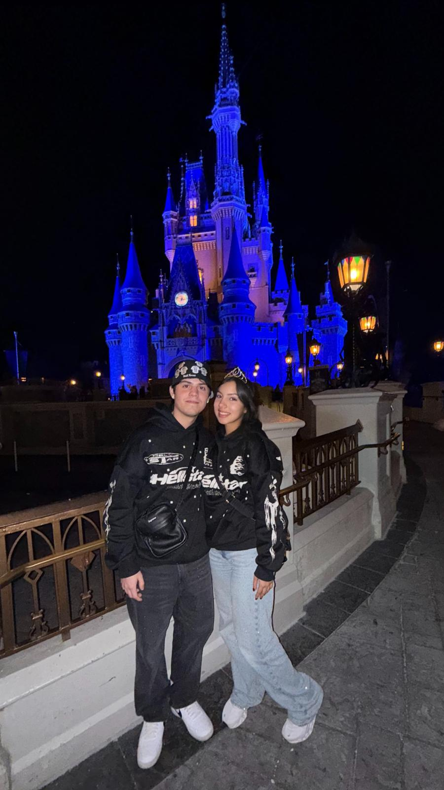
Ese día Ari estaba malita, con fiebre y gripe, pero increíblemente sacó fuerzas de donde no sé… y fuimos a Disney ❤️.
Yo ya había ido antes con mi familia, pero esta vez fue diferente. Esta vez iba con el amor de mi vida, y eso lo cambió todo. Verla caminando, sonriendo a pesar de no sentirse bien, viviendo su sueño con el corazón en la mano… fue algo que jamás voy a olvidar.
Me emocioné mucho. Porque aunque el parque era el mismo, la magia no venía de los castillos ni de los personajes: venía de ella. De Ari. De su mirada llena de ilusión, de su valentía, de su alegría, incluso estando enferma.
Y yo, que ya creía haberlo vivido todo ahí… volví a sentirme como un niño. Porque su emoción me contagió, me envolvió, me hizo volver a creer en la fantasía. Ese día entendí que Disney no se trata del lugar, sino de con quién lo compartes❤️.
Noche de peli ❤️
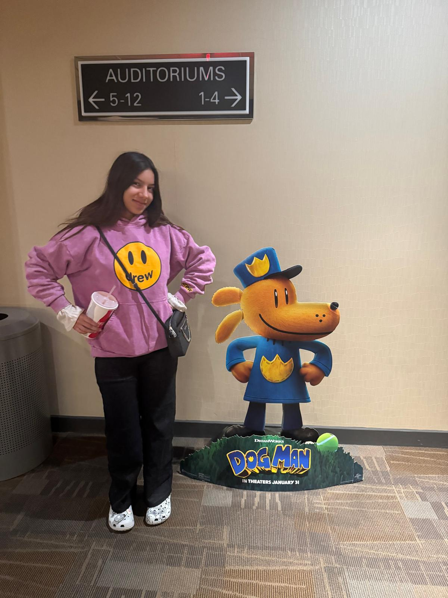
Fue algo sencillo, pero tal vez por eso fue tan especial. Era nuestra primera vez yendo juntos al cine, y aunque pareciera una cita común… para mí fue un momento que nunca voy a olvidar ❤️.
Estar a tu lado, compartir esas miradas en medio de la película, sentir tu manito entre la mía, reírnos en las mismas escenas… todo se sintió perfecto. No por la película, sino por ti. Por nosotros.
Y cuando salimos del cine, la noche no terminó. Nos quedamos en el carro, escuchando música como por una hora. Sin prisa, sin necesidad de hacer más… solo disfrutando de nuestra compañía, en paz, conectados, siendo simplemente nosotros.
Fue una de esas noches en las que entendés que el amor verdadero no necesita grandes planes. Solo necesita dos corazones que se disfruten hasta en el silencio. Y esa noche, yo me volví a enamorar de ti… un poquito más ❤️.
Ari Bank ❤️
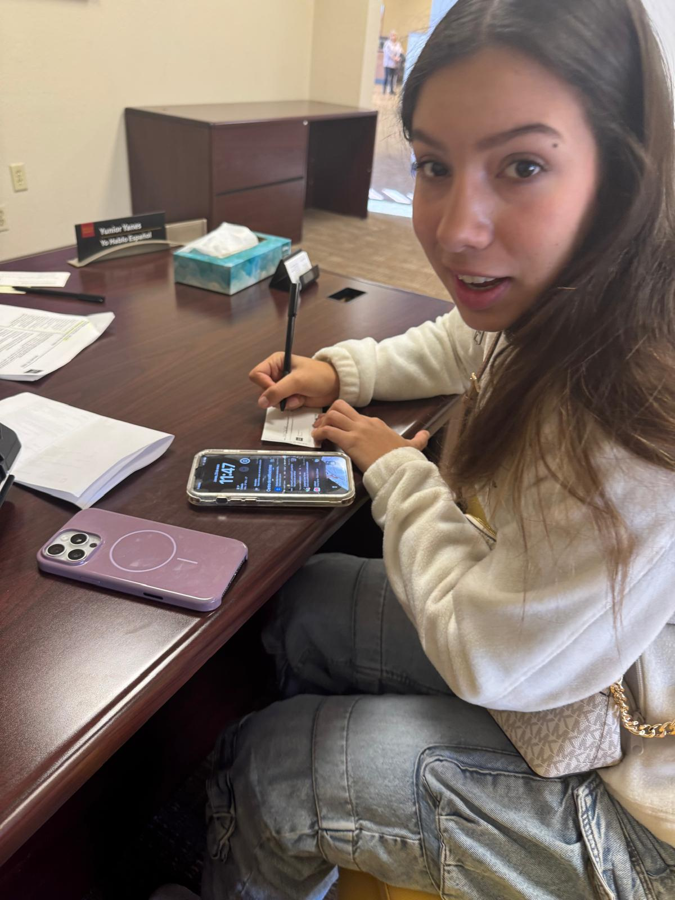
Quizás para otros suene como algo simple, pero para mí fue un momento muy especial: Ari abrió su primera cuenta bancaria en Estados Unidos ❤️.
Lo intentamos varias veces, lo hablamos por meses, y finalmente se logró. Y aunque pareciera solo un trámite… para mí fue mucho más. Fue ver a la mujer que amo dar un paso importante en este país, avanzar, crecer… y yo tener el honor de estar a su lado.
No era mi cuenta, pero la viví como si lo fuera. Porque cada vez que tú, Ari, das un paso hacia adelante, mi corazón se llena de orgullo. Porque soy tu novio, y nada me hace más feliz que verte cumplir cosas que antes solo estaban en planes.
Este fue solo el comienzo. Porque si algo tengo claro es que ver tus logros será siempre mi alegría más grande, y caminar contigo mientras los alcanzas… mi propósito ❤️.
Verte partir una vez más ❤️
Esta despedida fue diferente. No solo fue la más fuerte… fue la más real. Porque no era simplemente separarnos otra vez, era despedirme de todo lo que vivimos durante ese mes juntos. De nuestra rutina, de nuestros espacios, de nuestras tonterías y de nuestra paz ❤️.
Vivimos juntos por un mes entero. Un mes que se sintió como una vida. Durante esos días conocí a Ari con el alma… no a través de videollamadas ni mensajes, sino en cada café que le compraba en las mañanas, en cada broma tonta que nos hacía reír como niños, en cada abrazo silencioso que se daba sin motivo… solo porque estábamos ahí, presentes, compartiendo la vida.
Me acostumbré a todo lo tuyo: a verte dormida a mi lado, a tus risas en la cocina, a tus peleítas dulces, a tus bailes espontáneos, a la forma en la que me mirabas cuando decía algo sin sentido, y aún así te reías. Me acostumbré a ti. Y no solo eso: **me enamoré aún más profundamente**.
Volver del trabajo y saber que estabas ahí esperándome fue una de las sensaciones más lindas que he vivido. Sentirme acompañado, visto, cuidado… amado. En ese viaje confirmé que lo nuestro no es solo fuerte: es real. Es de esos amores que no necesitan demostrar nada a nadie, porque se sienten en los silencios, en los gestos y en los pequeños detalles que construyen una vida.
Pero el tiempo, como siempre, siguió corriendo. Y llegó ese día en el que tuvimos que ir al aeropuerto. Te acompañé con el corazón roto, intentando no demostrar lo que sentía… pero fue imposible. Cada paso tuyo hacia el control de seguridad era como una estaca más clavándose en mi pecho. Cuando te diste la vuelta, cuando me saludaste por última vez… me quebré. Y lo único que pude hacer fue llorar.
Lloré porque te amo. Lloré porque cada despedida se siente como un retroceso, aunque sé que en realidad vamos avanzando. Lloré porque tu ausencia pesa… porque tu presencia me había hecho sentir completo.
Pero también, entre lágrimas, sentí esperanza. Porque si algo tengo claro, es que no importa cuántas veces tengamos que despedirnos… siempre vamos a encontrarnos otra vez. Y si Dios nos pone diez mil obstáculos, voy a convertirlos en diez mil razones para correr más fuerte, para luchar con más ganas, para crecer con más fe… pero siempre a tu lado.
Ari, amor de mi vida, esta despedida no fue un final. Fue una pausa más en el camino que estamos recorriendo juntos. Porque si este mes me enseñó algo, es que no quiero una vida sin ti. Eres mi presente, mi futuro, mi destino. Y mientras tú existas, mi amor siempre tendrá una dirección: la tuya ❤️.
Te espero en julio, amor de mi vida ❤️
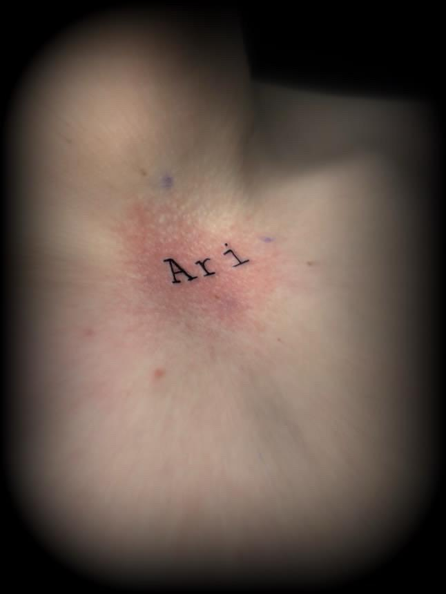
El 11 de julio ya no es solo una fecha… es el día que vuelve todo lo bonito, el día en que nos volvemos a ver, el día en que mi mundo vuelve a tenerte cerca ❤️.
Ya están listos los pasajes. El conteo regresivo empezó. Y cada vez que pienso en ese momento en el aeropuerto, mi corazón se acelera. Porque sé que este reencuentro no será como los demás… será aún más especial.
Ese día vamos a crear nuevas historias. De esas que se graban para siempre. De esas que nos van a hacer mirar atrás y decir: “ahí fue, ahí empezó todo de nuevo”. Estoy seguro de que será uno de los días más increíbles de nuestras vidas.
¿Por qué lo sé? Bueno… eso lo sabrás más adelante. 😉 Pero lo que sí te puedo decir ahora es que estoy más emocionado que nunca. Porque no hay nada que se compare con volver a verte, abrazarte, besarte y sentir que todo vale la pena solo por tenerte otra vez conmigo ❤️.
Para ti, en tu cumpleaños ❤️
Ari, amor de mi vida...
Hoy es tu cumpleaños, y no podía dejar pasar este día sin entregarte algo que viniera directamente desde lo más profundo de mí. Sé que no estoy allá para abrazarte, besarte o mirarte a los ojos mientras te digo esto… pero si me falta el cuerpo, te prometo que mi alma está más cerca de ti que nunca.
Este escrito, esta página, toda esta locura… no es otra cosa que mi forma de demostrarte cuánto te amo. No es un detalle cualquiera. Es un testimonio vivo de lo que siento por ti. No hay una sola línea aquí que no haya sido escrita desde la emoción, desde los recuerdos, desde la esperanza, desde el amor.
Ari, tú eres la mujer más hermosa que he conocido… por dentro y por fuera. Y no lo digo solo por cómo luces, sino por cómo sientes, cómo hablas, cómo te entregas, cómo te preocupas, cómo amas. Eres una niña con un alma preciosa, con unos valores que admiro, y con una luz que brilla incluso en los días más oscuros.
Contigo he conocido lo que es el verdadero amor. No ese de película perfecta… sino uno real: con risas, con lágrimas, con peleítas, con reconciliaciones, con distancia, con abrazos soñados y con promesas que valen más que el tiempo. He aprendido contigo a amar en serio. A cuidar. A respetar. A elegirte incluso cuando no estás cerca.
Hoy, más que nunca, quiero que sepas lo que significas para mí. Porque estoy profundamente enamorado de ti. Porque contigo me descubrí capaz de darlo todo. Porque cuando pienso en el futuro, no lo puedo imaginar sin ti. Porque cuando hablo de hijos, los imagino con tu ternura. Porque cuando sueño con una casa, la veo con tus fotos en las paredes. Porque cuando pienso en un anillo… te pienso a ti.
Y sí, Ari, quiero casarme contigo. Quiero poner ese anillo en tu dedo, verte llorar de emoción, decirte que eres mi esposa, mi compañera, mi todo. Y quiero que nuestros hijos crezcan viendo lo que es un amor de verdad, viendo cómo se ama con esfuerzo, con respeto, con entrega… como tú y yo lo hemos hecho desde el primer día.
No sabes lo orgulloso que estoy de ti. De quién eres. De todo lo que has superado. De cómo sigues adelante con esa fuerza que me inspira. De cómo mantienes el alma pura a pesar de todo. De cómo brillas sin hacer ruido. De cómo das amor sin pedir nada a cambio.
Hoy no puedo estar ahí para darte mi abrazo. Y créeme que eso me duele más de lo que puedo explicar. Pero al menos puedo hacer esto. Puedo abrir mi corazón en mil palabras y dejarte aquí, guardado para siempre, todo lo que siento por ti.
Estoy escribiendo esto con lágrimas en los ojos y con nuestras canciones favoritas sonando de fondo. Y aunque mis manos son las que escriben… te juro que es mi corazón el que te habla.
Gracias por existir. Gracias por amarme. Gracias por dejarme amarte. Y gracias por ser tú, sin filtros, sin máscaras, simplemente tú.
Que tengas un cumpleaños hermoso, lleno de amor, luz, familia, risas y paz. Que Dios y la Virgen te protejan y te guíen siempre.
Y que la vida me dé el privilegio de estar contigo cada vez más cerca, cada vez más fuerte, cada vez más unidos.
Te amo con locura. Y si el amor tuviera forma de regalo… este sería el mío para ti.
Feliz cumpleaños, mi princesa. Te tengo una última sorpresa a continuación...❤️